Les quatre compétences du référentiel BUT GEII (parcours ÉME) et leurs apprentissages critiques, illustrés par mes projets, SAÉ et mon stage chez GE Vernova. Cliquez sur un AC pour dérouler le détail.
Dans le cadre du projet intitulé « Automatisation du transfert de pièces industrielles », j'ai eu pour mission de rédiger le cahier des charges visant à définir la conception d'un système robotisé basé sur le robot ABB IRB1600.
L'objectif du projet était d'automatiser le transfert de pièces depuis un tapis de convoyage vers une palette de transport, tout en garantissant la sécurité des opérateurs, la traçabilité des opérations et la conformité aux normes industrielles. Le projet s'inscrivait dans une démarche d'amélioration de la productivité et de la fiabilité des processus de l'entreprise cliente.
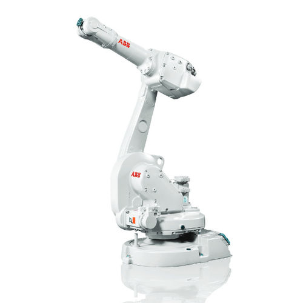
Pour identifier les besoins du client, j'ai adopté une approche structurée et communicative :
Cette méthode m'a permis de transformer des besoins exprimés oralement en exigences techniques mesurables, facilitant ainsi la validation du projet avec le client.
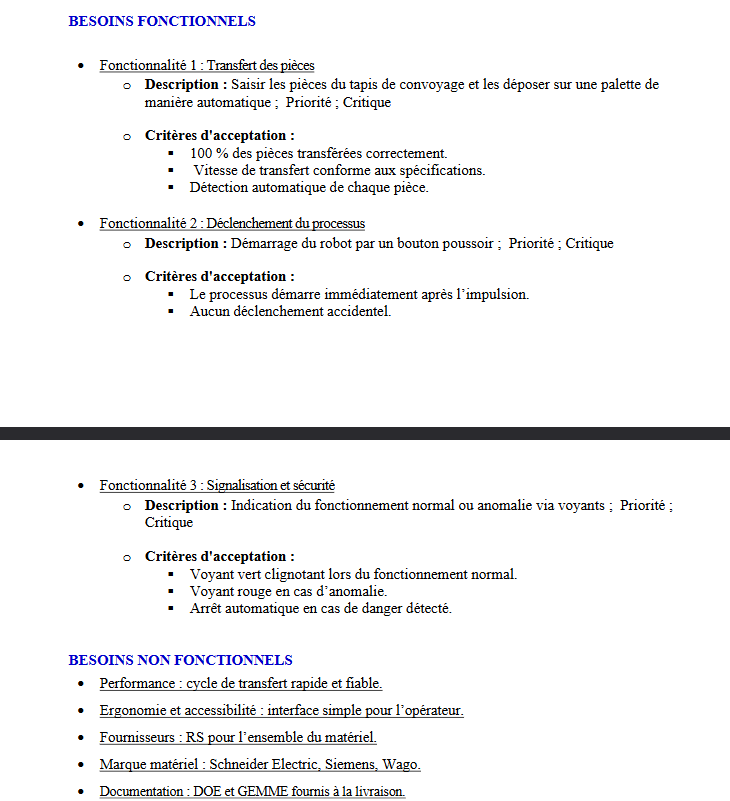
Ma contribution principale a porté sur la rédaction complète du document technique, version 1.0, incluant :
Cette rédaction m'a amené à travailler de manière structurée et analytique, en veillant à ce que chaque exigence réponde à un objectif clair et vérifiable, conformément à la stratégie industrielle du client.
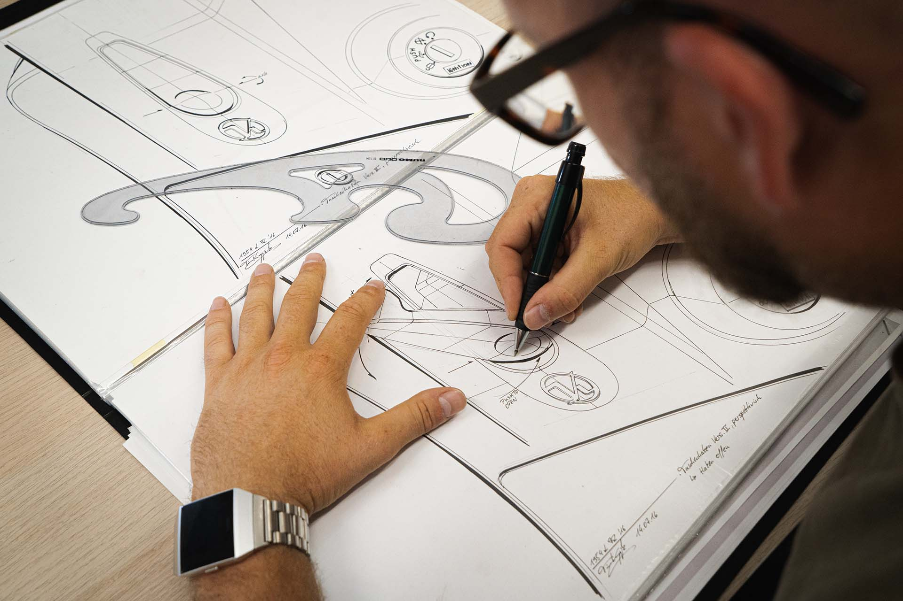
Au départ, la difficulté principale a été de traduire des besoins clients en exigences précises et mesurables. J'ai compris l'importance d'une communication claire et adaptée au niveau technique de chaque interlocuteur : les opérateurs s'expriment avec des termes pratiques, tandis que les responsables évoquent des objectifs stratégiques (productivité, fiabilité).
J'ai appris à relier les aspects technologiques, humains et organisationnels :
Cette expérience m'a permis de renforcer ma capacité d'analyse, ma rigueur documentaire et mon sens de la synthèse, tout en développant une meilleure compréhension du lien entre innovation technologique et stratégie d'entreprise.
Dans le cadre du dimensionnement d'un départ moteur pour le moteur de la pompe de notre microcentrale hydraulique didactique, nous avons étudié plusieurs solutions proposées par le configurateur Schneider, allant de départs compacts à un système avec variateur.
Conçue comme une représentation à échelle réduite d'une centrale hydraulique réelle, son but est de permettre l'étude de son comportement et de sa rentabilité. Chaque solution présente des avantages spécifiques.
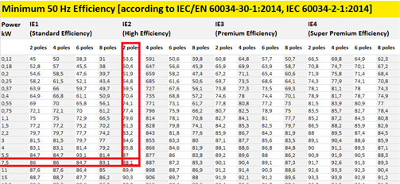
Dans mon étude du départ moteur de la pompe (7,5 kW – 400 V – 50 Hz), j'ai d'abord :
Ensuite, j'ai dimensionné :
Ces choix sont issus de calculs et de contraintes normatives : argumentation technique chiffrée.
Je n'ai pas retenu une seule solution. J'ai comparé 4 architectures différentes :
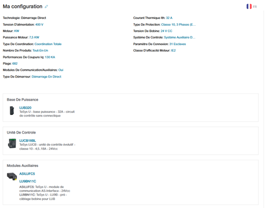
Ce départ-moteur est un système à 1 produit, car toutes les fonctions sont intégrées dans un seul ensemble TeSys U : base de puissance, unité de contrôle et modules auxiliaires.
Ce choix est intéressant car il combine plusieurs fonctions dans un seul ensemble : protection, commande et communication. C'est une solution compacte, bien dimensionnée pour notre moteur de 7,5 kW, et adaptée à une intégration dans un système industriel moderne.
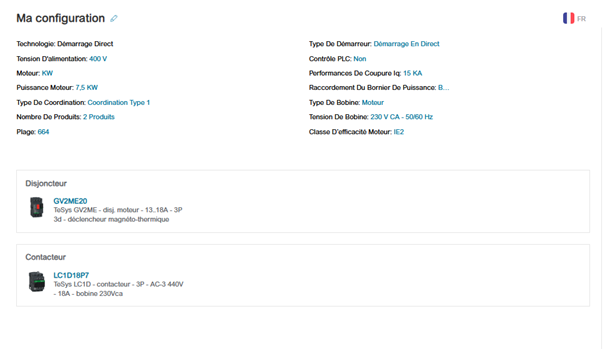
Ce départ-moteur est un système à 2 produits, car il utilise un disjoncteur de protection et un contacteur de commande séparés :
Le choix de deux produits distincts permet de séparer la fonction protection et la fonction commande, ce qui est pratique pour la maintenance et offre plus de flexibilité dans l'installation.
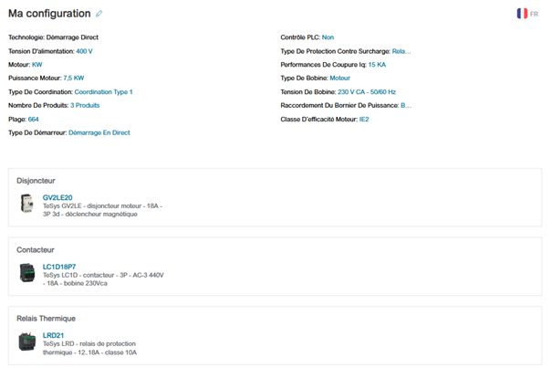
Ce départ-moteur est un système à 3 produits, car chaque fonction est séparée sur un composant distinct :
Cette configuration à trois produits sépare clairement les fonctions : protection CC, protection contre les surcharges et commande.
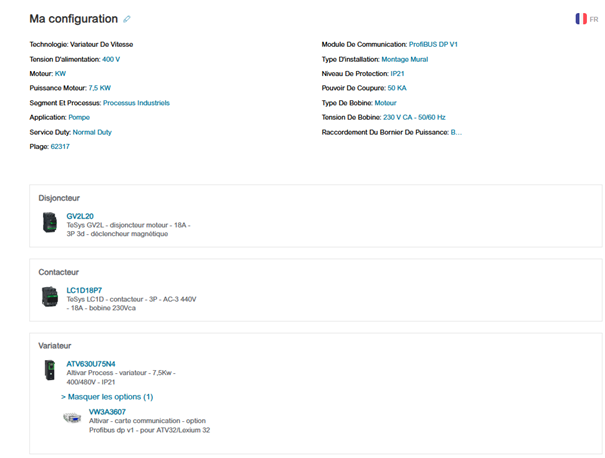
Pour ce départ-moteur, le configurateur a retenu une solution modulaire à 3 produits combinant :
La carte communication VW3A3607 (Profibus DP) permet l'intégration du variateur dans un réseau industriel pour une supervision et une automatisation. Cette configuration combine les avantages d'une protection (disjoncteur + contacteur) avec ceux d'un variateur :
Ici le choix du variateur représente plus qu'un simple départ moteur, c'est une stratégie d'optimisation énergétique de notre système. La régulation de vitesse améliore l'adaptation à la charge, la durée de vie du moteur est augmentée. Ce choix répond mieux aux contraintes d'exploitation de notre système.
Au cours de mon stage chez GE Vernova (Bourogne), j'ai mené en autonomie un projet d'adaptation du programme automate LOGO! 8.4 d'une centrifugeuse industrielle : reprendre le programme d'une machine de référence (N4) et l'adapter à une seconde machine (N2), dont le câblage, les capteurs et la signalisation différaient. Ce travail nécessitait un véritable dossier de conception pour tracer chaque choix et permettre la maintenance future de la machine.
Le dossier que j'ai produit comprenait :
J'ai compris qu'un dossier de conception n'est pas une simple formalité : c'est lui qui a permis de valider le projet avec mon tuteur, de mettre en service la machine sans erreur de câblage, et qui servira de référence si une machine similaire du site doit être adaptée. J'ai aussi appris à trancher entre des sources documentaires contradictoires en remontant à la source la plus fiable, une situation très fréquente sur des machines anciennes.
Durant mon stage chez GE Vernova, le diagnostic de pannes était mon quotidien. Deux interventions illustrent particulièrement ma capacité à remonter à la cause racine plutôt qu'à traiter les symptômes.
Un défaut court-circuit (CC) bloquait l'affûteuse N°1. J'ai appliqué avec le technicien une démarche d'élimination en trois phases :
Le contrôle minutieux du câble a révélé une phase en contact avec la masse. Cause racine réelle : une pièce tombée sur le câble plusieurs mois auparavant, dont les dégâts se sont aggravés avec l'usure et le lubrifiant jusqu'à la rupture de l'isolant.
Après remplacement de la crépine encrassée puis du débitmètre 155B2, le défaut persistait : l'automate ne recevait jamais le signal. En vérifiant le câblage du connecteur M12 4 fils dans l'armoire, nous avons découvert la cause racine : la sortie utilisée était la sortie NC (blanc, pin 2) au lieu de la sortie NO (noir, pin 4), alors que le débitmètre ne dispose que d'une seule sortie NO active. Le symptôme (défaut débit) masquait une erreur de câblage d'origine.
Ces interventions m'ont appris qu'un diagnostic fiable repose sur une démarche structurée (hypothèses → tests → élimination), sur la lecture rigoureuse des schémas électriques et sur la vérification de la chaîne complète, du capteur jusqu'à l'entrée automate. Remplacer un composant sans comprendre la cause conduit à des pannes récurrentes.
Chez GE Vernova, chaque diagnostic devait déboucher sur une correction durable, validée en fonctionnement. J'ai proposé et mis en œuvre des solutions correctives de natures variées : câblage, composants, et programmation.
Sur mon projet de centrifugeuse LOGO!, le compteur C016 s'incrémentait de façon parasite à chaque retour sur la page MANU de l'afficheur LOGO! TD. J'ai identifié la cause : l'afficheur remet les touches F à 0 au changement de page, créant de faux fronts montants 0→1. Ma solution corrective, conçue seul : insérer un temporisateur T_ON de 500 ms (déclenché par le mémento de mode manuel) en série avec les entrées F1/F2, bloquant les impulsions parasites pendant la fenêtre de stabilisation. Le correctif a été validé en fonctionnement réel sur la machine.
J'ai appris qu'une bonne solution corrective doit être proportionnée (la plus simple qui fonctionne), durable (traiter la cause, pas le symptôme) et validée par des essais. La correction du bug compteur m'a montré que la compréhension fine du comportement matériel (ici, l'afficheur TD) est souvent la clé d'une correction élégante.
Dans le cadre de notre projet intitulé « SAE Infrastructure de recharge pour véhicules électriques », nous avons eu pour objectif la réalisation d'une procédure d'essais. Ce test nous a permis d'utiliser un appareil de simulation de Véhicule Électrique pour observer le comportement d'une borne de recharge en fonction des différents comportements qu'un véhicule peut avoir.
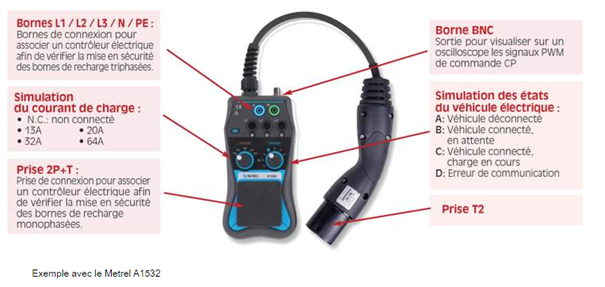
Explication de la borne BNC : on peut connecter un oscilloscope à la borne BNC pour observer les signaux CP, ce sont les signaux de commande d'état du véhicule électrique nous permettant d'observer si un souci est présent ou non. Ce sont des signaux carrés dont l'amplitude varie en fonction des différents états du VE.
Se connecter à l'aide du METREL à la borne de recharge via la prise T2 nous permet de visualiser comment réagit la borne en fonction des différents états que les VE peuvent avoir. Pour cela on peut agir sur la borne une fois la prise branchée grâce aux 2 commutateurs disponibles.
Permet d'observer le comportement de la borne lorsque l'on demande un courant supérieur à la capacité maximale de la borne. Deux comportements sont possibles :
Idéalement, l'intérêt de ce type de matériel est de tester le bon fonctionnement d'une borne sans avoir besoin de se brancher à un véhicule pour ainsi pouvoir mettre en service la borne et résoudre des défauts qui peuvent exister.
Notre outil de vérification du bon fonctionnement de l'infrastructure de recharge va simuler une voiture, mais il n'y aura pas de consommation de courant, pas de puissance :
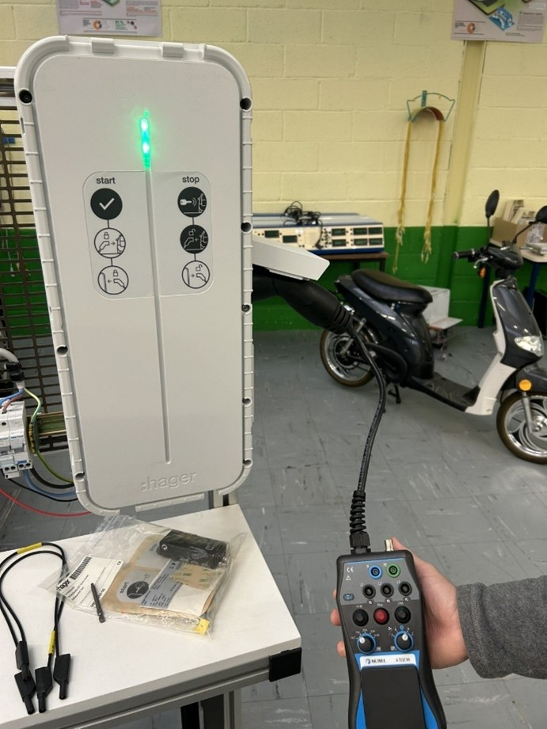
Phase A :
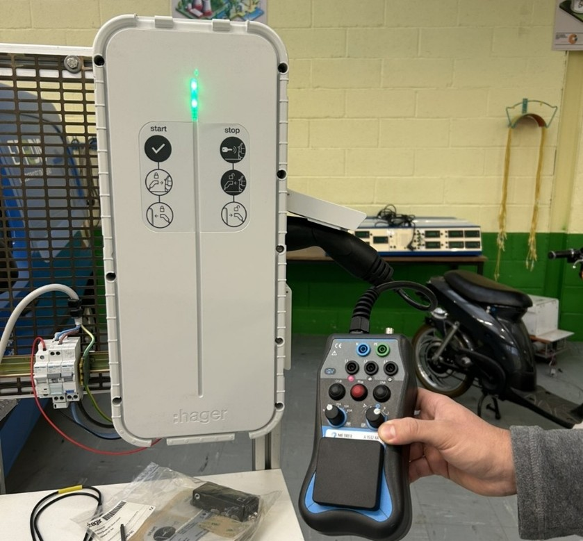
Passage à la position C sur l'appareil de mesure et je passe le commutateur PP sur 13 A pour simuler une charge : une charge est donc demandée, on entend le bruit du commutateur s'enclencher et on remarque bien la présence d'une tension sur l'appareil de mesure (voir sur la photo sous connecteur L1, LED rouge active). Le bandeau LED devient vert et clignote rapidement, on observe donc l'état de charge d'un VE.
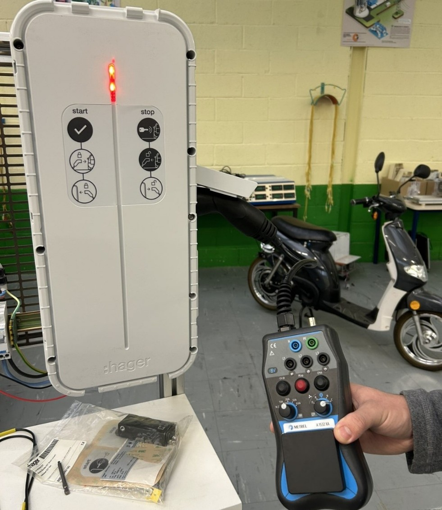
Test de défaillance : on augmente la charge sur 20 A afin d'observer le fonctionnement de la borne lorsque l'on demande une charge plus grande que ce qu'elle est capable de débiter. Elle se met en mode Erreur, on entend l'alimentation qui se coupe et le bandeau LED passe au rouge.
Dans le cadre de notre projet intitulé « SAE Infrastructure de recharge pour véhicules électriques », nous avons eu pour objectif la réalisation d'un guide de maintenance concernant une borne de recharge que l'on a mise en service.
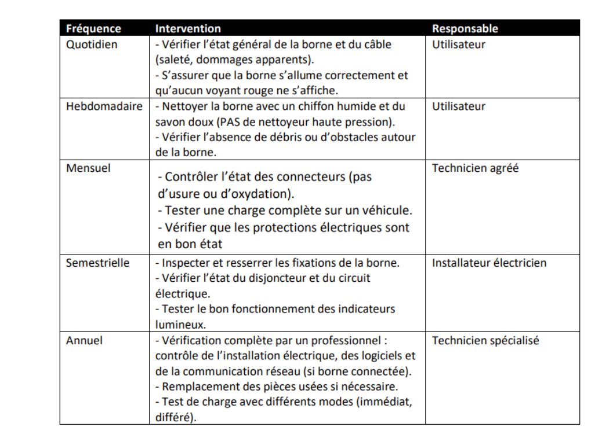
J'ai proposé un plan organisé par fréquence : quotidienne, hebdomadaire, mensuelle, semestrielle et annuelle.
En répartissant clairement les responsabilités, je distingue les utilisateurs, technicien et installateur. Cette organisation permet d'éviter les interventions non qualifiées, de sécuriser les opérations techniques, d'optimiser les coûts de maintenance et de clarifier les rôles de chacun.
La maintenance couvre donc 4 parties :
J'ai donc proposé une solution de maintenance globale.
Chez GE Vernova, chaque machine-outil usine des pièces de turbines à gaz à très forte valeur ajoutée. Une machine à l'arrêt, c'est un opérateur immobilisé, une pièce bloquée en cours d'usinage et un retard qui se répercute sur toute la chaîne de production. J'ai appris à intégrer cette dimension économique dans les décisions de maintenance.
J'ai compris que la maintenance industrielle est autant une question économique que technique : le coût d'une intervention doit toujours être comparé au coût de l'indisponibilité qu'elle évite. C'est ce raisonnement qui justifie le préventif, les sauvegardes et parfois des remplacements complets plutôt que des réparations partielles.
Au sein du service maintenance de GE Vernova, groupe international, j'ai été en interaction constante avec différents acteurs : opérateurs de production, techniciens électriciens et mécaniciens, et documentation de constructeurs étrangers.
Les machines du site proviennent de constructeurs allemands (Heyligenstaedt, KUKA, Siemens, Heidenhain), italiens (Mandelli, Carnaghi), suisses (Starrag), japonais (Fanuc, Toyota) et britanniques (Renishaw). J'ai régulièrement exploité leur documentation technique, souvent en anglais (brochage Heidenhain, calibrateur Renishaw XR20, sondes ifm, kit EMD KUKA), pour la traduire en actions concrètes sur site et en procédures en français pour l'équipe.
Chez GE Vernova, j'ai participé à plusieurs remplacements complets d'équipements (moteurs, variateur, capteurs) nécessitant une planification rigoureuse : chaque étape devait être anticipée pour garantir la sécurité, limiter la durée d'immobilisation de la machine et réussir la mise en service du premier coup.
Le démarreur du groupe hydraulique disjonctait de manière répétée ; le moteur de la pompe de dressage de la meule devait être remplacé. La séquence planifiée et exécutée :
Même logique pour l'installation d'un nouveau moteur associé à un variateur Schneider Altivar 30 : relevé du câblage de l'ancien moteur, remplacement mécanique (accouplement, support), paramétrage du variateur à partir de la plaque signalétique (courant thermique itH, puissance nPr, tension unS, courant nCr, fréquence FrS, cos φ, rampes ACC/dEC à 3 s, sens de marche 2C), câblage des entrées DI1/DI2 vers l'automate, puis essais sur la gamme de vitesse associée — concluants.
J'ai appris qu'une installation réussie se joue avant l'intervention : lecture des schémas, relevés du câblage existant, préparation de la consignation et anticipation des essais. La coordination avec les mécaniciens et le respect strict des étapes de sécurité (EPI, LOTO, VAT, balisage) font partie intégrante de la planification.
Dans le cadre de notre projet intitulé « SAE Infrastructure de recharge pour véhicules électriques », nous avons eu pour objectif la réalisation de procédures d'installation et de mise en service d'une borne de recharge.
Dans le guide d'installation que j'ai réalisé, l'installation est organisée de manière logique :
La procédure suit un ordre chronologique cohérent : Préparation → Fixation → Raccordement → Sécurisation. Le but étant de produire une méthode exploitable par un technicien.
Contenant :
Détaillant également :
Cette procédure ne se limite pas à simplement installer, elle garantit la conformité et la sécurité de l'installation complète de l'IRVE.
Concernant la mise en service, je décris clairement :
La mise en service regroupe donc les points suivants : paramétrage logiciel, vérification électrique, validation fonctionnelle, tests dynamiques. On produit une procédure complète.
Dans le cadre de notre projet intitulé « SAE Systèmes multiplexés sur véhicules », nous avons produit un référentiel technique traçable, dossier de conformité.
L'objectif de ce projet est d'afficher sur une interface homme-machine (IHM) les données (courant, tension, état de charge, etc.) circulant sur le réseau CAN de la maquette pédagogique MOTHYS (Modular Training Hybrid System). Ce document a été établi afin de servir de référence historique sur l'atteinte de nos objectifs et de présenter la démarche suivie au cours du temps, au fil des différentes versions du projet.
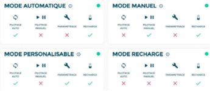
Version 1 — Validation : vérification du bon fonctionnement en mode manuel, contrôle du système via des contacteurs et observation des grandeurs électriques. Cette version valide la base fonctionnelle de notre système.
Dans le document réalisé je présente une progression logique :
Cela montre une gestion chronologique du développement de notre système, me permettant ainsi d'assurer une traçabilité de l'évolution de notre système.
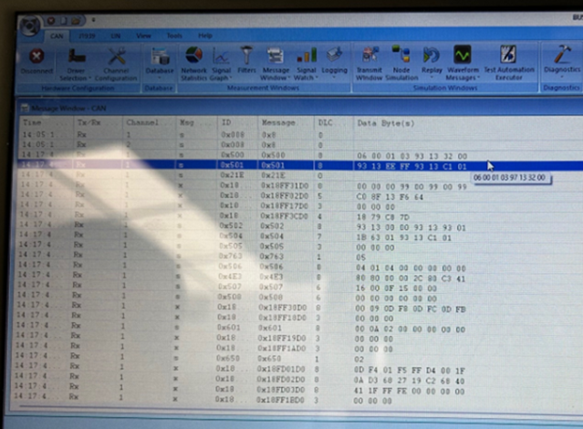
Version 2 — Remplacement de la tablette par le logiciel BUSMaster. J'ai utilisé le logiciel BUSMaster pour pouvoir :
Cette version nous a permis de maîtriser le protocole CAN et l'autonomie de notre système en remplaçant l'IHM du constructeur.
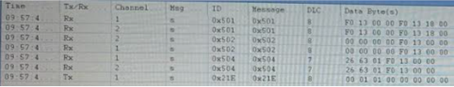
Version 3 — Filtrage et structuration des données. J'ai mis en place un filtre nous permettant de sélectionner directement les trames que l'on souhaite et ainsi afficher les données essentielles que l'on souhaite recevoir du système MOTHYS, qui sont la tension et le courant de la batterie et de la sortie, ainsi que l'état de charge de la batterie. Les trames correspondantes sont celles ayant pour identifiants : 0x501, 0x502, 0x504 et 0x21E. Une fois le filtre créé, on obtient l'interface que l'on peut observer sur l'image ci-dessus.
Mon document contient donc un objectif clair, la description des systèmes, l'historique des évolutions ; pour ce faire j'ai eu besoin d'une méthodologie technique, et de préciser quels étaient les identifiants CAN utilisés, les paramétrages utilisés sur le logiciel BUSMaster ainsi que les données que j'ai obtenues.
J'ai donc produit un référentiel technique traçable, ce qui correspond à un dossier de conformité. Pour ce qui est de la gestion du versionnage, on distingue clairement chaque version, avec les modifications qui ont été apportées, en montrant la valeur ajoutée de chaque évolution et en justifiant les choix techniques.